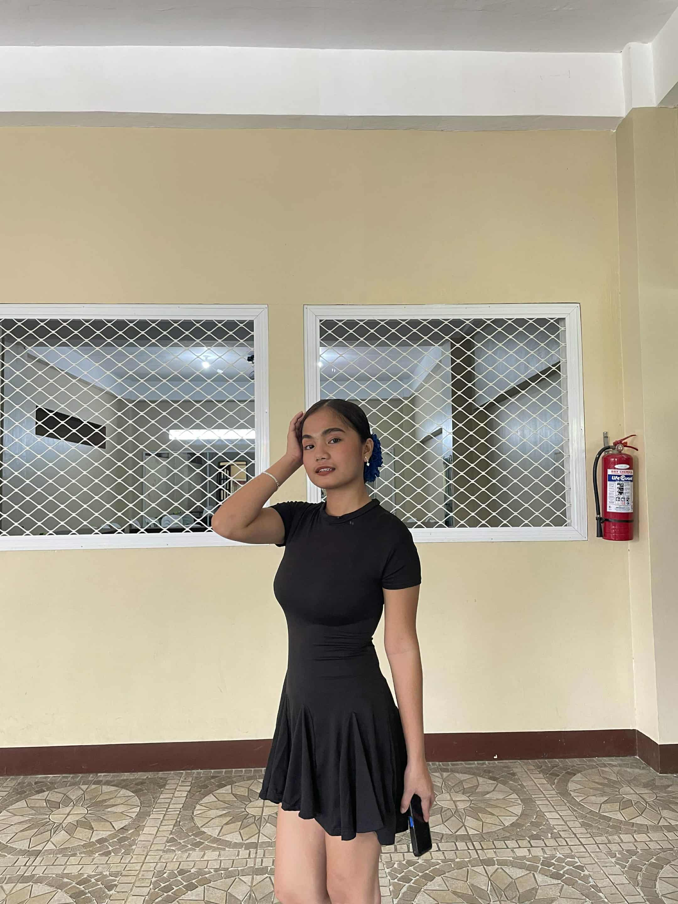

About Me
Hi! I'm Irizand Joy T. Marquez — but most people call me Joy or Iri. I'm a 19-year-old student at the College of Science, Technology, and Communications Inc., currently pursuing my dreams in the world of technology. As an aspiring System Administrator, I'm passionate about building, learning, and improving every day. My goal is to use my technical skills, creativity, and determination to make an impact in the IT industry while continuously growing both personally and professionally.
Technical Skills
Here are some of the tools and technologies I'm familiar with:

HTML
Building the structure of the web
CSS
Designing clean and modern layouts
PowerPoint
Creating professional presentations
Microsoft Word
Document creation and formatting
Education & Achievements
My academic journey has shaped who I am and continues to inspire my passion for learning:
(2024 - Present)
CSTC Sariaya
Currently pursuing my college studies in Information Technology.
(2025)
Department Volleyball Event
Participated in our department's volleyball event — teamwork, discipline, and leadership combined!
(2023 - 2024)
Lutucan Integrated National High School (LINHS)
Where I learned the value of teamwork and perseverance.

(2023 - 2024)
Lutucan Integrated National High School (LINHS)
Strand Pageant
Joined to challenge myself and boost my confidence.

(2021 - 2022)
Montecillo Elementary School
Lakambini Award
Honored as “Lakambini” in Grade 6 — a proud and unforgettable memory.
Interests & Hobbies
When I'm not studying or learning about tech, I love spending my time doing things that inspire me:
Exploring Nature
Appreciating calm and beautiful sceneries
Bonding with Friends & Family
Creating memories and sharing laughter
Food Lover
Enjoying every bite of good food

Photography
Capturing simple moments that tell stories
Seeing the ocean
It feels like taking a deep breath for the soul
Playing volleyball
It feels enjoying and relaxing for me
Watching movies
I enjoy and it relax on me wathing movies